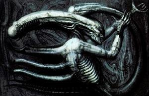

Necronom IV
H. R. Giger · 1976
In copyright. Look and learn: shown for study, not for download.
Giger completed Necronom IV in 1976. After Dan O'Bannon handed Ridley Scott a copy of Giger's book Necronomicon, Scott chose this image as the basis for the creature in the film Alien. Giger offered to design the creature from scratch, but Scott required him to work from Necronom IV, saying that starting over would take too long. Giger was part of the team that won the Academy Award for visual effects for the film.